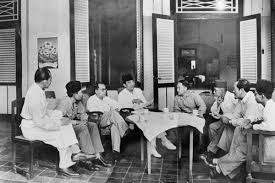
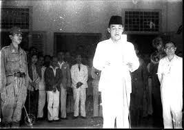

1. Latar Belakang
Pada tahun 1945, Jepang yang saat itu menduduki Indonesia mulai terdesak dalam Perang Dunia II. Amerika Serikat menjatuhkan bom atom di Hiroshima (6 Agustus 1945) dan Nagasaki (9 Agustus 1945). Akibatnya, Jepang menyerah kepada Sekutu pada 15 Agustus 1945.
Kabar menyerahnya Jepang sampai ke Indonesia melalui siaran radio dan tokoh-tokoh pergerakan. Namun Jepang berusaha menutupi hal itu karena belum ingin kehilangan kendali atas Indonesia. Para pemuda melihat ini sebagai kesempatan emas untuk segera memproklamasikan kemerdekaan tanpa campur tangan Jepang.
2. Perbedaan Pendapat Golongan Tua dan Muda
Setelah kabar kekalahan Jepang tersebar, muncul dua pandangan:
- Golongan muda (Sutan Sjahrir, Wikana, Chaerul Saleh, Soekarni, dll) ingin segera memproklamasikan kemerdekaan tanpa menunggu Jepang.
- Golongan tua (Ir. Soekarno, Drs. Mohammad Hatta, dll) ingin berhati-hati agar tidak menimbulkan pertumpahan darah.
Perbedaan ini memuncak malam 15 Agustus 1945, ketika para pemuda mendesak Soekarno–Hatta agar segera menyatakan kemerdekaan.
3. Peristiwa Rengasdengklok (16 Agustus 1945)
Para pemuda membawa Soekarno dan Hatta ke Rengasdengklok (Karawang, Jawa Barat) agar mereka tidak dipengaruhi Jepang dan segera memproklamasikan kemerdekaan. Namun, Ahmad Soebardjo menenangkan mereka dengan janji bahwa proklamasi akan dilakukan keesokan harinya di Jakarta.
4. Penyusunan Naskah Proklamasi
Malam 16 Agustus 1945, para tokoh berkumpul di rumah Laksamana Tadashi Maeda (Jl. Imam Bonjol No.1, Jakarta). Soekarno, Hatta, dan Ahmad Soebardjo menyusun naskah proklamasi. Soekarno menulis naskah tangan, Sayuti Melik mengetiknya, dan Soekarni mengusulkan agar ditandatangani oleh Soekarno dan Hatta atas nama bangsa Indonesia.
5. Pembacaan Proklamasi (17 Agustus 1945)
Pembacaan proklamasi dilakukan di rumah Soekarno, Jl. Pegangsaan Timur No. 56 Jakarta, pukul 10.00 WIB. Soekarno membacakan teks dengan lantang di hadapan rakyat dan tokoh-tokoh perjuangan. Bendera Merah Putih dijahit oleh Ibu Fatmawati dikibarkan oleh Latief Hendraningrat dan Suhud. Lagu Indonesia Raya dikumandangkan dengan penuh haru.
6. Dampak dan Tindak Lanjut
Berita kemerdekaan menyebar ke seluruh Indonesia melalui radio dan surat kabar. Tanggal 18 Agustus 1945, PPKI menetapkan:
- UUD 1945 sebagai konstitusi negara.
- Soekarno sebagai Presiden dan Mohammad Hatta sebagai Wakil Presiden.
7. Makna Proklamasi
Proklamasi bukan hanya pernyataan politik, tetapi juga simbol kebangkitan bangsa Indonesia.
- Menandai lahirnya negara Indonesia yang merdeka dan berdaulat.
- Mengakhiri penjajahan selama lebih dari 350 tahun.
- Menjadi awal perjuangan baru untuk mempertahankan dan mengisi kemerdekaan. Sumber